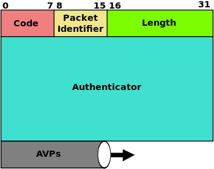
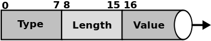

radius协议简介
radius(Remote Authentication Dial In User Service)协议是一种AAA网络协议，兼顾Authentication, Authorization, and Accounting (AAA)认证，授权，计费功能的网络管理协议。该协议是应用层协议，基础是UDP协议。
radius是一个CS结构的协议，C端一般是RAS(Remote Access Server)服务器，包括网关，web服务器，认证网关等(一般的服务端，但在radius协议中是客户端。)，这些软硬件设备都具备一个radius clien模块，可以和radius server通信。radius server通常是后台运行在Unix或者windows主机上的一个进程。radius server具备三个功能：
- 认证未授权用户
- 授权给通过认证的用户访问特定网络服务的权限
- 对用户使用的服务进行计费
认证和授权过程
1.用户向RAS发起认证请求，认证凭证信息传送给RAS。可以使用链路层协议传送凭证信息，也可以使用https形式的web form。
-
RAS向radius server 发起一个radius协议的request，请求授权访问特定网络。请求包含用户凭证信息(usename,password等)，也可以包含一些格额外信息，如请求的授权。
-
radius根据预定义的认证模式(如PAP, CHAP or EAP)进行用户身份认证。传统认证模式是读本地文件，现代的可以通过标准sql等进行外部认证。认证通过，server可以授予用户特定的访问属性，包括使用时限，使用权限，计费信息等。
-
radius server返回认证应答，包括三种，每次认证只返回一种：
(1)Access Reject - 用户未通过认证，可能是密码错误，未激活用户等。
(2):Access Challenge -请求额外的认证信息，如第二个密码，PIN。也可以用在更复杂的情况下，如何用户建立一条绕过 RAS的安全信道。
(3):Access Accept - 通过认证，用户被授权特定的网络服务。
认证通过后，授权属性信息会通过绑定在Access Accept数据包中返回给RAS。可以包含以下信息：
-
分配给认证用户的IP地址。
-
认证用户可以选择的IP地址池。
-
用户的最长连接时间。
-
用户链接的优先队列或者其他强制信息
-
L2TP，VLAN，Quality of Service (QoS) parameters等参数信息
计费过程
认证通过之后，RAS或者NAS允许用户开始数据访问，此时RAS或者NAS会发送Accounting Start (a RADIUS Accounting Request packet containing an Acct-Status-Type attribute with the value "start")请求给radius server，标志用户网络计费开始。该请求包括用户名，用户网络地址，绑定点以及一个会话ID。
之后，RAS或者NAS会周期性的向radius server发送Interim Update records (a RADIUS Accounting Request packet containing an Acct-Status-Type attribute with the value "interim-update")请求，更新对应的活跃会话的状态。该数据包包含会话持续时间和当前数据使用情况。
最后，用户断开网络时，RAS或者NAS将发送final Accounting Stop record (a RADIUS Accounting Request packet containing an Acct-Status-Type attribute with the value "stop")请求给radius server，该请求包括用户链接时间，发送的数据量，发送的数据包，断开原因以及其他一些用户链接信息。
以上几种accounting request packet若发出后server没有应答返回，client端将不停的以一定间隔发送，直到接到应答信息。
radius数据包

radius的数据包是封装在UDP数据包的数据部分，数据包的格式如图所示，首先是1个字节长的code，代表包的类型，其次是长为1个自己的这个包的ID，接着是两个自己长的包长，包长包括从code开始到属性的所有数据的长度。Authenticator长为16个字节，该域在请求包和相应包中有不同的功能。
最后一部分是AVPs，传送client发给server的数据，也可以传送server传送给client的数据。每一个AVP都具有类似相同的结构：

首先是Type域，一个字节长，表示该属性的类型，其次是长为1个字节的length，标示这个属性的长度，最后是属性值。 一个radius数据包可以包含多个AVP对。Radius协议预定义了63个属性，用户也可以自己定义自己的AVP。
Coovachilli中的radius实现
coovachilli的1.1.1.1版本中radius的实现文件：
- radius.h
- radius_chillispot.h
- radius_wispr.h
- radius.c
基本数据类型定义在limits.h文件中。
radius.h
该文件是最基本的radius协议的数据结构，函数的声明等。radius packet type宏定义，标示code域，除了协议中定义的标准code，该文件中还定义了额外的自定义了编码为40到48的8个额外code。 属性定义：该文件中用宏定义定义了100多个属性。
基本的数据结构包括：
- struct radius_packet_t radius包定义，这个struct定义了radius包的基本结构。
- struct radius_queue_tradius 包队列元素, 这个struct定义radius包队列的元素。
- struct radius_t Radius 实例，这个Struct定义radius的实例结构。每一个radius连接都是这样的一个实例。
- struct radiusm_t radius实例队列数据结构。
- struct radius_attr_t radius属性AVP结构的数据结构定义。
- radius_vsattr_t radius自定义属性AVP结构
- int radius_new 创建新radius实例
- int radius_init_q 初始化radius实例队列
- int radius_free 释放一个radius实例
- void radius_set 设置radius的实例
- int radius_set_cb_auth_conf 收到access request的response后的回调函数
- int radius_set_cb_acct_conf 收到account request的response后的回调函数
- int radius_req 发出请求
- int radius_resp 发送相应
- int radius_decaps 处理一个收到的radius包
- int radius_addattr 给一个包增加属性
- int radius_getnextattr 从一个包中取出一个属性
- int radius_pwdecode 解码密码
- int radius_pwencode 编码密码
- int radius_keydecode 解码一个mppe密码
- int radius_keyencode 编码一个mppe密码
- int radius_timeout 处理超时的包的重发
- int radius_timeleft 返回剩余的等待时间，准备重发
- int radius_authresp_authenticator 生成应答包的认证字
- int chilliauth_radius 开始认证一个radius实例